Independent films / MichiganSilent preview
Horror Film Roulette XIII / 2026
Gone.
Watch filmFull film · with sound


Tools.
Six working experiments. ↗Notebook.
127 things worth keeping. ↗ Bobby.
Bobby.Behind the camera.Meet the human ↗


Same LaB. Your kind of room.
Horror Film Roulette XIII / 2026
Bobby.